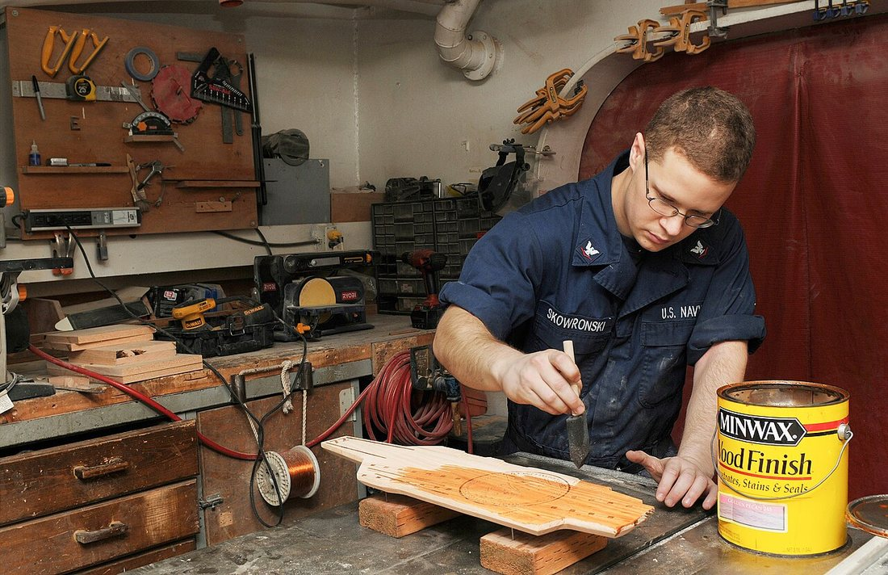
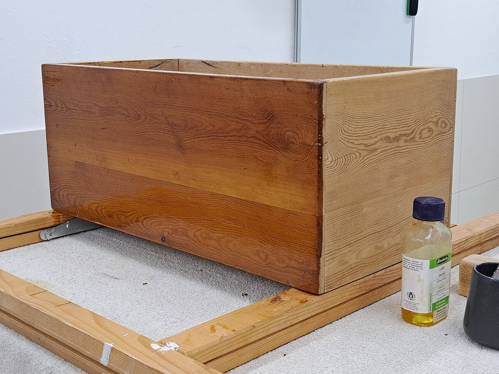
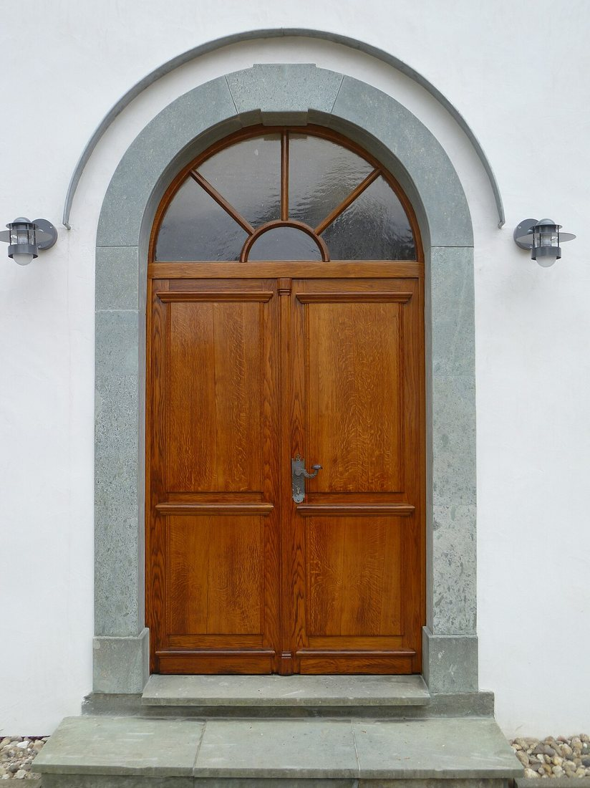
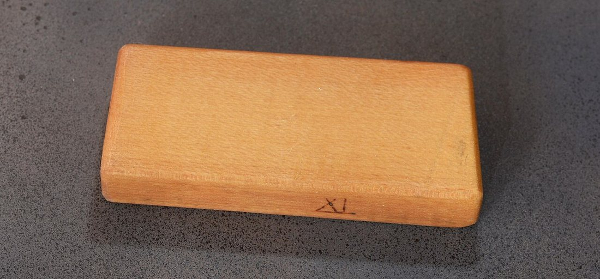

Көркем еңбек (ұлдар) · 2-бөлім · Ағаш өңдеу Art & Craft (Boys) · Section 2 · Woodworking Художественный труд (мальчики) · Раздел 2 · Обработка древесины
Ағаш бұйымдарын әрлеу
Finishing Wooden Products
Отделка изделий из дерева
Шлифтеуден лак пен майға дейін: ағашты қорғайтын және әсемдейтін соңғы жұмыстар. From sanding to varnish and oil: the final steps that protect wood and reveal its beauty. От шлифовки до лака и масла: завершающие операции, которые защищают древесину и раскрывают её красоту.
Әрлеу дегеніміз не? What is finishing? Что такое отделка?
Әрлеу (отделка) — ағаш бұйымын дайындаудың соңғы кезеңі. Бұл — бетті тегістеу, кемшіліктерді жою және оны қорғаныш әрі әсемдеуші қабатпен жабу. Дұрыс әрленген бұйым ылғалдан, шаңнан, тырналудан және күн сәулесінен сақталады, ал ағаштың табиғи өрнегі (текстурасы) айқын көрінеді. Әрлеусіз тіпті ең дәл жасалған бұйым да тез ескіреді: ылғал тартып, иіліп, түсі оңады. Finishing is the final stage of making a wooden product. It means smoothing the surface, removing defects, and covering the wood with a protective and decorative layer. A properly finished item is shielded from moisture, dust, scratches and sunlight, while the natural grain (texture) of the wood is revealed. Without finishing, even the most precisely built object ages quickly: it absorbs moisture, warps and fades. Отделка — это завершающий этап изготовления деревянного изделия. Она включает выравнивание поверхности, устранение дефектов и нанесение защитного и декоративного слоя. Правильно отделанное изделие защищено от влаги, пыли, царапин и солнечных лучей, а природный рисунок (текстура) древесины становится выразительным. Без отделки даже самое точно сделанное изделие быстро стареет: впитывает влагу, коробится и выгорает.
Әрлеу екі топқа бөлінеді: мөлдір (лак, май, балауыз — ағаштың өрнегін сақтайды) және мөлдір емес (бояу, эмаль — бетті толық жабады). Шеберлер материалдың түрі мен бұйымның мақсатына қарай таңдайды. Finishing falls into two groups: transparent (varnish, oil, wax — preserving the grain) and opaque (paint, enamel — fully covering the surface). Craftsmen choose according to the type of wood and the purpose of the product. Отделка делится на два вида: прозрачную (лак, масло, воск — сохраняют рисунок древесины) и непрозрачную (краска, эмаль — полностью закрывают поверхность). Мастер выбирает её по породе дерева и назначению изделия.

Әрлеу не үшін қажет? Why finishing matters Зачем нужна отделка
Ылғалдан, шіруден және зиянкестерден сақтайды. Shields wood from moisture, rot and pests. Бережёт дерево от влаги, гниения и вредителей.
Текстураны айқындап, түсін тереңдетеді. Reveals the grain and deepens the colour. Подчёркивает текстуру и углубляет цвет.
Тегіс бет шаң жинамайды, оңай сүртіледі. A smooth surface holds no dust and wipes clean. Гладкая поверхность не копит пыль и легко моется.
Тырналу мен соққыға төзімділікті арттырады. Increases resistance to scratches and knocks. Повышает стойкость к царапинам и ударам.
Әрлеудің кезеңдері The finishing process step by step Этапы отделки по шагам
Тегістеу (шлифтеу). Бетті наждак қағазымен өрнек бойымен ыспалайды: алдымен ірі түйіршікпен (Р80–Р120), сосын ұсақпен (Р180–Р240). Тегіс әрі тайғақ бет алу — әрлеудің негізі. Sanding. Rub the surface with sandpaper along the grain: first a coarse grit (P80–P120), then a fine one (P180–P240). A smooth, even surface is the foundation of good finishing. Шлифование. Поверхность зачищают наждачной бумагой вдоль волокон: сначала крупным зерном (Р80–Р120), затем мелким (Р180–Р240). Гладкая ровная поверхность — основа всей отделки.
Шаңнан тазалау. Шлифтеуден кейінгі шаңды щёткамен немесе дымқыл шүберекпен сүртіп алады. Бетте шаң қалса, лак немесе май біркелкі жатпайды. Dust removal. Wipe off the sanding dust with a brush or a damp cloth. If dust remains, the varnish or oil will not lie evenly. Удаление пыли. Пыль после шлифовки сметают щёткой или протирают влажной тканью. Если пыль останется, лак или масло лягут неровно.
Грунттау немесе тонирование. Қажет болса, ағашты морилкамен бояйды (түс беру) немесе грунтпен сіңдіреді (бетті теңестіру, материал шығынын азайту). Priming or staining. If needed, the wood is coloured with stain (to set the tone) or sealed with primer (to even out the surface and save finish material). Грунтование или тонирование. При необходимости дерево окрашивают морилкой (придают тон) или пропитывают грунтом (выравнивают поверхность, экономят отделочный материал).
Негізгі қабатты жағу. Лак, май немесе бояуды жұқа қабатпен, өрнек бойымен бірнеше рет жағады. Әр қабат толық кепкенше күтеді. Applying the main coat. Varnish, oil or paint is applied in thin layers along the grain, in several passes. Each coat must dry fully before the next. Нанесение основного слоя. Лак, масло или краску наносят тонким слоем вдоль волокон в несколько приёмов. Каждый слой полностью высушивают перед следующим.
Аралық тегістеу мен жылтырату. Қабаттар арасында бетті өте ұсақ қағазбен жеңіл тегістейді, ал соңында балауызбен немесе киізбен жылтыратады. Between-coat sanding and polishing. Between layers the surface is lightly smoothed with very fine paper; at the end it is buffed to a shine with wax or felt. Межслойная шлифовка и полировка. Между слоями поверхность слегка зачищают очень мелкой бумагой, а в конце полируют до блеска воском или войлоком.

💡 Шебердің кеңесі 💡 Craftsman's tip 💡 Совет мастера
Лакты әрқашан жұқа қабатпен жағыңыз: екі-үш жұқа қабат бір қалың қабаттан әлдеқайда берік әрі тегіс болады. Always apply varnish in thin coats: two or three thin layers are far stronger and smoother than one thick one. Лак всегда наносите тонким слоем: два-три тонких слоя гораздо прочнее и ровнее, чем один толстый.
Әрлеу материалдарын салыстыру Comparing finishing materials Сравнение отделочных материалов
| Материал | Что даёт | Где применяют | Особенности |
|---|---|---|---|
| Лак | Прочную прозрачную плёнку и блеск | Мебель, шкатулки, рамки, игрушки | Сохраняет текстуру, требует чистоты и сушки |
| Масло | Глубокую пропитку, матовый «тёплый» вид | Кухонные доски, столешницы, посуда | Безопасно, легко обновляется, не образует плёнки |
| Воск | Мягкий шелковистый блеск и защиту | Сувениры, резьба, антиквариат | Часто поверх масла или лака; боится воды |
| Морилка | Цвет и оттенок древесины | Имитация ценных пород, тонирование | Не защищает — нужен слой лака или масла сверху |
| Краска / эмаль | Сплошное непрозрачное покрытие | Уличные изделия, детали, скрывающие дефекты | Полностью закрывает рисунок дерева |
| Материал | Не береді | Қайда қолданылады | Ерекшелігі |
|---|---|---|---|
| Лак | Берік мөлдір қабат пен жылтыр | Жиһаз, шкатулка, жақтау, ойыншық | Текстураны сақтайды, тазалық пен кебуді талап етеді |
| Май | Терең сіңіру, күңгірт «жылы» түр | Ас үй тақтайы, үстелүсті, ыдыс | Қауіпсіз, оңай жаңартылады, қабат түзбейді |
| Балауыз | Жұмсақ жібектей жылтыр мен қорғаныс | Кәдесый, оюлар, антиквариат | Көбіне май не лак үстіне; судан қорқады |
| Морилка | Ағашқа түс пен реңк | Бағалы тұқымды еліктеу, тонирование | Қорғамайды — үстіне лак не май керек |
| Бояу / эмаль | Тұтас мөлдір емес жабын | Көше бұйымдары, кемшілікті жасыру | Ағаш өрнегін толық жабады |
| Material | What it gives | Where it is used | Features |
|---|---|---|---|
| Varnish | A tough clear film and gloss | Furniture, boxes, frames, toys | Keeps the grain; needs cleanliness and drying |
| Oil | Deep penetration, a matte "warm" look | Cutting boards, tabletops, tableware | Safe, easily renewed, forms no film |
| Wax | A soft silky sheen and protection | Souvenirs, carving, antiques | Often over oil or varnish; fears water |
| Stain | Colour and tone for the wood | Imitating valuable species, tinting | Does not protect — needs varnish or oil on top |
| Paint / enamel | A solid opaque coating | Outdoor items, hiding defects | Completely covers the wood pattern |
Әрлеудің нәтижесі The result of good finishing Результат хорошей отделки


Қауіпсіздік ережелері Safety rules Правила безопасности
Лак пен бояумен тек желдетілетін бөлмеде жұмыс істеңіз: булары улы. Work with varnish and paint only in a ventilated room: the fumes are toxic. Работайте с лаком и краской только в проветриваемом помещении: пары ядовиты.
Ашық от пен ұшқыннан аулақ болыңыз — еріткіштер тез тұтанады. Keep away from open flame and sparks — solvents catch fire easily. Держитесь подальше от открытого огня и искр — растворители легко воспламеняются.
Қолғап пен респиратор киіңіз, көзіңізді сақтаңыз. Wear gloves and a respirator, and protect your eyes. Надевайте перчатки и респиратор, берегите глаза.
Маймен суланған шүберектерді жинап тастаңыз — олар өздігінен жануы мүмкін. Dispose of oil-soaked rags properly — they can ignite on their own. Утилизируйте тряпки, пропитанные маслом, — они могут самовозгораться.